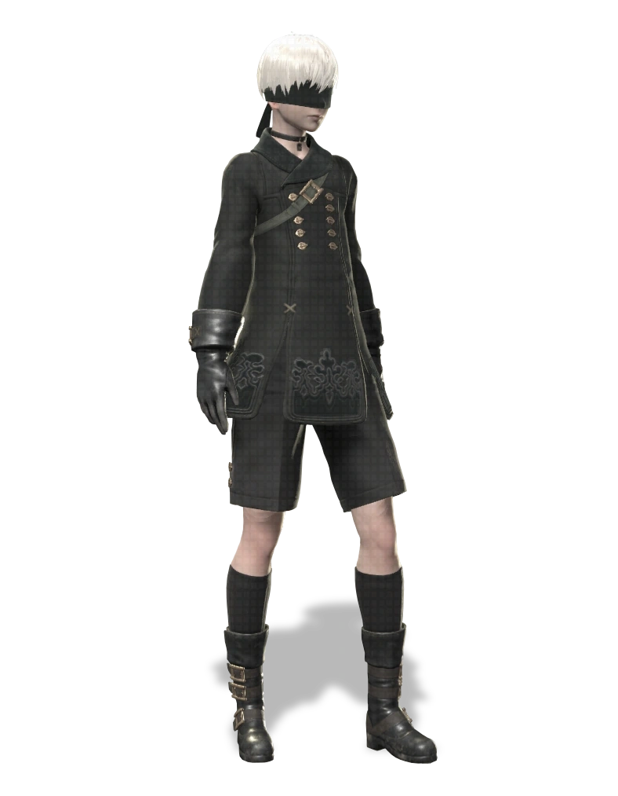
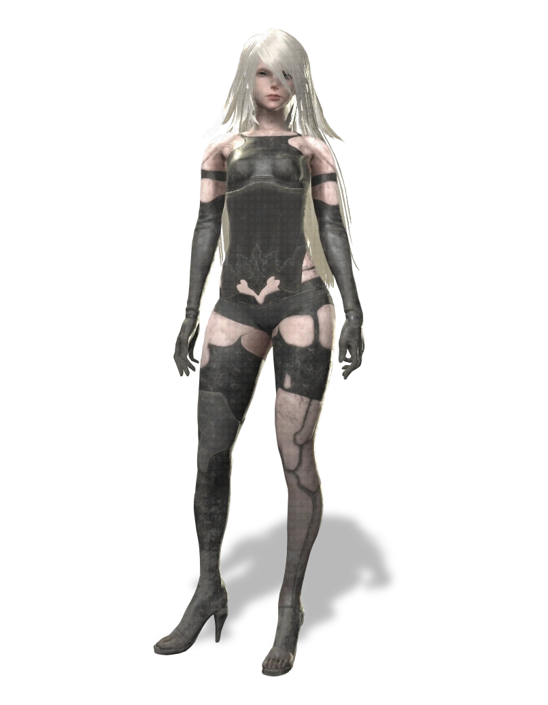

""Everything that lives is designed to end. We are perpetually trapped...in a never-ending spiral of life and death."
— 2B in the Prologue
YoRHa No.2 Type B, or just 2B, is one of the protagonists of NieR:Automata. She is a YoRHa android created to battle the Machine lifeforms that have invaded the planet on behalf of the surviving humans. She served during the 14th Machine War.
2B is an all-purpose battle android, deployed as a member of the automated YoRHa infantry. She is equipped with a multitude of weapons for close quarters combat and can attack from range using the Pod support system."
Notes
2B is the most balanced of the three characters, with a slight bias towards offensive functions.
2B herself does not appear as an actual boss in the story, instead at the Tower, multiple copies of 2B of unknown origin (likely made by the Machine lifeforms) appear to fight 9S with Virtuous Contract and Virtuous Treaty.
Personality
2B is a blade of quiet determination. As a combat android, she does not encourage idle chatter on frivolous subjects and is generally reticent towards others. She also has high respect for the chain of command and rarely questions her orders, unlike 9S. In the English audio, 2B occasionally expresses a notably sarcastic wit in the face of certain situations.
Extra Info
Like with the other androids, 2B was designed by Akihiko Yoshida.
The large sword that 2B wields in official artwork, the Beastlord, is one of the signature weapons used by the original protagonist of NieR. Interestingly, in any hacking sequence where one of the female character models is used instead of the usual pointer, the large sword on their back will always be the Beastlord.
2B's name is a reference to the famous "to be, or not to be" speech in Shakespeare's Hamlet, signifying the existential questions at the heart of the game's narrative.

YoRHa No.9 Type S
Story
""This battle will likely have a great effect on the outcome of the war. 2B and I—our battle will continue for some time to come. But that's another story for another day."
— 9S at the End of Route B
YoRHa No.9 Type S, or just 9S, is one of the protagonists of NieR:Automata. He is the main character of Branches B and D, as well as one of the main antagonists and final boss of Branch C.
9S is a scanner-type android who served during the 14th Machine War. He has an attack function, but is overall an investigative android—a member of the YoRHa automated infantry unit, which excels in hacking intelligence gathering.
Notes
9S focuses on hacking and movement inputs to fight, as opposed to 2B and A2.
9S is fought a single time as A2 at the end of Route C. He has Cruel Oath equipped during this fight, but prefers to fight from a distance using hacking and pod fire. His three pods have Gatling, Hammer, and Gravity equipped and he will swap between them throughout the fight. He hacks the player in two ways: one that disrupts the HUD and one that sends the player into a hacking game. Hacks that disrupt the HUD work the same as if the player was hit by an EMP attack; that is HUD elements may be disrupted such as not being able to attack, use pod fire, or have the player's vision disrupted. The hacking game is standard and can be countered by counter-hacking 9S in the same way players have hacked machines throughout the game.
Personality
As a scanner model, 9S is naturally curious about the world around him - especially the machine lifeforms. Usually working alone, he is deployed on the front lines with other S-type models, acting as YoRHa's main intelligence gatherer. According to A2, 9S is a "high-end model", meaning that he is one of the newest scanner types. As the newest model, he tends to dig deeper into YoRHa's secrets than his peers, often asking questions that those around him think he shouldn't be asking.
Extra Info
9S states that he enjoys taking baths, even though they are not required for androids, describing that it "FEELS good".
9S's English voice actor, Kyle McCarley, was told in the recording booth that 9S would be around 19 years old if he were a human.

YoRHa Type A No.2
Story
"I never quite realized...how beautiful this world is."
— A2, in Ending C.
YoRHa Type A No.2, or just A2, is one of the protagonists of NieR:Automata, as well as the final boss in Branch D. She is also a major character in the YoRHa stage play.
She is a prototype of the YoRHa android line, and combat data from her and her comrades were used to create the superior current lines, including YoRHa No.2 Type B and YoRHa No.9 Type S. She doesn't like to speak and often keeps to herself.
Three years prior to the events of NieR:Automata, she was a member of the first YoRHa squadron deployed to Earth as part of the Pearl Harbor Descent during the early years of the 14th Machine War. Her alias at the time was No2 which is parsed in Automata as "Number Two".
Notes
A2 handles very similarly to 2B, but she has several key differences.
Rather than self-destructing, A2 has the ability to enter a "Berserk Mode," increasing damage both dealt and received and rapidly depleting her health until it hits 1 HP, whereupon Berserk Mode will end.
Chapter 06-05 - 2B and 9S are designated to investigate the Forest Kingdom by Pascal, until the two come across a large castle structure, in which various robots protect their "king" by attacking the two androids. Whilst this happens, 2B and 9S make it to the end of the castle, to find A2 at the end, impaling the king in the side, and killing it. 2B fights this new android with the assistance of 9S and is informed by the Commander through the Pod that A2 deserted the YoRHa force and needed to be annihilated. The two fail to defeat the android, as 9S asks A2 why she left the force when A2 responded by saying that YoRHa betrayed them. During the battle, A2 will dash around the screen and attack the player, jumping from high distances, and will not use Berserk mode.
Chapter 17-09 (Branch D) - As in the Forest Kingdom, A2 is fought in a side-on mode with the same move set. She will now use Pod Programs, including abilities that the player may not have acquired beforehand during gameplay.
Personality
A2 is initially depicted as mysterious and taciturn. However, it is eventually shown through her interactions with Pod 042 that she possesses a socially awkward personality and speaks in informal language. She has a propensity towards reckless behavior, as she will dive headlong into dangerous situations without consideration for strategic evaluations or her own personal safety. In the English audio, she tends to be more blunt, impatient, and foul-mouthed when speaking to others, almost resembling Kainé.
Extra Info
The designation A2 refers to [A]ttacker Number [2].
Her extended backstory during the Pearl Harbor Descent is available as an official stage play, with A2 being portrayed by the Japanese idol and actor, Ruka Endō.
In the TGS 2016 trailer, many characters of NieR: Automata were showcased along with a word/emotion that represents them the most. A2 is represented by 復讐—"revenge."